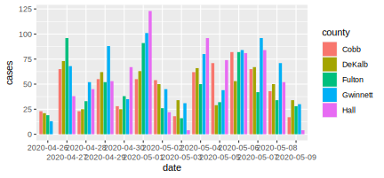
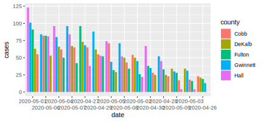
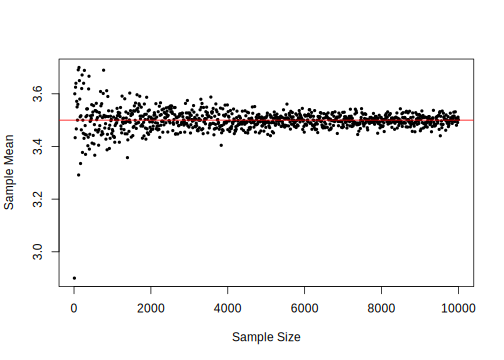
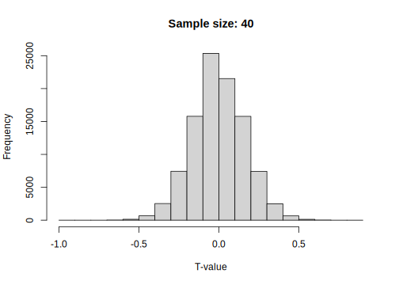
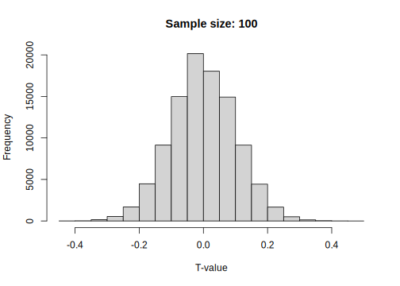

A Appendix A
A.1 Understanding statistics and probability with code

A.1.2 Illustration of variability
# draw a random sample from a normal distribution with a large standard deviation
largevar <- rnorm(10000, mean = 5000, sd = 5)
# draw a random sample from a normal distribution with a small standard deviation
littlevar <- rnorm(10000, mean = 5000, sd = 1)
# visualize the distributions of both samples with a density plot
plot(density(littlevar), col = "blue",
xlim=c(min(largevar), max(largevar)), main="Income Distribution")
lines(density(largevar), col = "red")
Note: the red curve illustrates the distribution of the sample with a large standard deviation (a lot of variability) whereas the blue curve illustrates the one with a rather small standard deviation.
A.1.3 Skewness and Kurtosis
# Install the R-package called "moments" with the following command (if not installed yet):
# install.packages("moments")
# load the package
library(moments)A.1.3.1 Skewness
Skewness refers to how symmetric the frequency distribution of a variable is. For example, a distribution can be ‘positively skewed’ meaning it has a long tail on the right and a lot of ‘mass’ (observations) on the left. We can see that when visualizing the distribution in a histogram or a density plot. In R this looks as follow (consider the comments in the code explaining what each line does):
# draw a random sample of simulated data from a normal distribution
# the sample is of size 1000 (hence, n = 1000)
sample <- rnorm(n = 1000)
# plot a histogram and a density plot of that sample
# note that the distribution is neither strongly positively nor negatively skewed
# (this is to be expected, as we have drawn a sample from a normal distribution)
hist(sample)
plot(density(sample))# now compute the skewness
skewness(sample)## [1] -0.01866# Now we intentionally change our sample to be strongly positively skewed
# We do that by adding some outliers (observations with very high values) to the sample
sample <- c(sample, (rnorm(200) + 2), (rnorm(200) + 3))
# Have a look at the distribution and re-calculate the skewness
plot(density(sample))skewness(sample)## [1] 0.4765#A.1.3.2 Kurtosis
Kurtosis refers to how much ‘mass’ a distribution has in its ‘tails’. It thus tells us something about whether a distribution tends to have a lot of outliers. Again, plotting the data can help us understand this concept of kurtosis. Lets have a look at this in R (consider the comments in the code explaining what each line does):
# draw a random sample of simulated data from a normal distribution
# the sample is of size 1000 (hence, n = 1000)
sample <- rnorm(n = 1000)
# plot the density & compute the kurtosis
plot(density(sample))kurtosis(sample)## [1] 2.763# now lets remove observations from the extremes in this distribution
# we thus intentionally alter the distribution to have less mass in its tails
sample <- sample[ sample > -0.6 & sample < 0.6]
# plot the distribution again and see how the tails of it (and thus the kurtosis) has changed
plot(density(sample))# re-calculate the kurtosis
kurtosis(sample)## [1] 1.888# as expected, the kurtosis has now a lower valueA.1.3.3 Implement the formulas for skewness and kurtosis in R
Skewness
# own implementation
sum((sample-mean(sample))^3) / ((length(sample)-1) * sd(sample)^3)## [1] 0.01567# implementation in moments package
skewness(sample)## [1] 0.01569Kurtosis
# own implementation
sum((sample-mean(sample))^4) / ((length(sample)-1) * sd(sample)^4)## [1] 1.883# implementation in moments package
kurtosis(sample)## [1] 1.888A.1.4 The Law of Large Numbers
The Law of Large Numbers (LLN) is an important statistical property which essentially describes how the behavior of sample averages is related to sample size. Particularly, it states that the sample mean can come as close as we like to the mean of the population from which it is drawn by simply increasing the sample size. That is, the larger our randomly selected sample from a population, the closer is that sample’s mean to the mean of the population.
Think of playing dice. Each time we roll a fair die, the result is either 1, 2, 3, 4, 5, or 6, whereby each possible outcome can occur with the same probability (1/6). In other words we randomly draw die-values. Thus we can expect that the average of the resulting die values is (1 + 2 + 3 + 4 + 5 + 6)/6 = 3.5.
We can investigate this empirically: We roll a fair die once and record the result. We roll it again, and again we record the result. We keep rolling the die and recording results until we get 100 recorded results. Intuitively, we would expect to observe each possible die-value about equally often (given that the die is fair) because each time we roll the die, each possible value (1,2,..,6) is equally likely to be the result. And we would thus expect the average of the resulting die values to be around 3.5. However, just by chance it can obviously be the case that one value (say 5) occurs slightly more often than another value (say 1), leading to a sample mean slightly larger than 3.5. In this context, the LLN states that by increasing the number of times we are rolling the die, we will get closer and closer to 3.5. Now, let’s implement this experiment in R:
# first we define the potential values a die can take
dvalues <- 1:6 # the : operator generates a regular sequence of numbers (from:to)
dvalues## [1] 1 2 3 4 5 6# define the size of the sample n (how often do we roll the die...)
# for a start, we only roll the die ten times
n <- 10
# draw the random sample: 'roll the die n times and record each result'
results <- sample( x = dvalues, size = n, replace = TRUE)
# compute the mean
mean(results)## [1] 4.2As you can see we are relatively close to 3.5, but not quite there. So let’s roll the die more often and calculate the mean of the resulting values again:
n <- 100
# draw the random sample: 'roll the die n times and record each result'
results <- sample( x = dvalues, size = n, replace = TRUE)
# compute the mean
mean(results)## [1] 3.69We are already close to 3.5! Now let’s scale up these comparisons and show how the sample means are getting even closer to 3.5 when increasing the number of times we roll the die up to 10’000.
# Essentially, what we are doing here is repeating the experiment above many times,
# each time increasing n.
# define the set of sample sizes
ns <- seq(from = 10, to = 10000, by = 10)
# initiate an empty list to record the results
means <- list()
length(means) <- length(ns)
# iterate through each sample size: 'repeat the die experiment for each sample size'
for (i in 1:length(ns)) {
means[[i]] <- mean(sample( x = dvalues,
size = ns[i],
replace = TRUE))
}
# visualize the result: plot sample means against sample size
plot(ns, unlist(means),
ylab = "Sample Mean",
xlab = "Sample Size",
pch = 16,
cex = .6)
abline(h = 3.5, col = "red")
We observe that with smaller sample sizes the sample means are broadly spread around the population mean of 3.5. However, the more we go to the right extreme of the x-axis (and thus the larger the sample size), the narrower the sample means are spread around the population mean.
A.1.5 The Central Limit Theorem
The Central Limit Theorem (CLT) is an almost miraculous statistical property enabling us to test the statistical significance of a statistic such as the mean. In essence, the CLT states that as long as we have a large enough sample, the t-statistic (applied, e.g., to test whether the mean is equal to a particular value) is approximately standard normal distributed. This holds independently of how the underlying data is distributed.
Consider the dice-play-example above. We might want to statistically test whether we are indeed playing with a fair die. In order to test that we would roll the die 100 times and record each resulting value. We would then compute the sample mean and standard deviation in order to assess how likely it was to observe the mean we observe if the population mean actually is 3.5 (thus our H0 would be pop_mean = 3.5, or in plain English ‘the die is fair’). However, the distribution of the resulting die values are not standard normal distributed. So how can we interpret the sample standard deviation and the sample mean in the context of our hypothesis?
The simplest way to interpret these measures is by means of a t-statistic. A t-statistic for the sample mean under our working hypothesis that pop_mean = 3.5 is constructed as t(3.5) = (sample_mean - 3.5) / (sample_sd/sqrt(n)). Let’s illustrate this in R:
# First we roll the die like above
n <- 100
# draw the random sample: 'roll the die n times and record each result'
results <- sample( x = dvalues, size = n, replace = TRUE)
# compute the mean
sample_mean <- mean(results)
# compute the sample SD
sample_sd <- sd(results)
# estimated standard error of the mean
mean_se <- sample_sd/sqrt(n)
# compute the t-statistic:
t <- (sample_mean - 3.5) / mean_se
t## [1] 0.1671At this point you might wonder what the use of t is if the underlying data is not drawn from a normal distribution. In other words: what is the use of t if we cannot interpret it as a value that tells us how likely it is to observe this sample mean, given our null hypothesis? Well, actually we can. And here is where the magic of the CLT comes in: It turns out that there is a mathematical proof (i.e. the CLT) which states that the t-statistic itself can arbitrarily well be approximated by the standard normal distribution. This is true independent of the distribution of the underlying data in our sample! That is, if we have a large enough sample, we can simply compute the t-statistic and look up how likely it is to observe a value at least as large as t, given the null hypothesis is true (-> the p-value):
# calculate the p-value associated with the t-value calculated above
2*pnorm(-abs(t))## [1] 0.8673In that case we could not reject the null hypothesis of a fair die. However, as pointed out above, the t-statistic is only asymptotically (meaning with very large samples) normally distributed. We might not want to trust this hypothesis test too much because we were using a sample of only 100 observations.
Let’s turn back to R in order to illustrate the CLT at work. Similar to the illustration of the LLN above, we will repeatedly compute the t-statistic of our dice play experiment and for each trial increase the number of observations.
# define the set of sample sizes
ns <- c(10, 40, 100)
# initiate an empty list to record the results
ts <- list()
length(ts) <- length(ns)
# iterate through each sample size: 'repeat the die experiment for each sample size'
for (i in 1:length(ns)) {
samples.i <- sapply(1:100000, function(j) sample( x = dvalues,
size = ns[i],
replace = TRUE))
ts[[i]] <- apply(samples.i, function(x) (mean(x) - 3.5) / sd(x), MARGIN = 2)
}
# visualize the result: plot the density for each sample size
# plot the density for each set of t values
hist(ts[[1]], main = "Sample size: 10", xlab = "T-value")hist(ts[[2]], main = "Sample size: 40", xlab = "T-value")
hist(ts[[3]], main = "Sample size: 100", xlab = "T-value")
# finally have a look at the actual standard normal distribution as a reference point
plot(function(t)dnorm(t), -4, 4, main = "Normal density")Note how the histogram is getting closer to a normal distribution with increasing sample size.